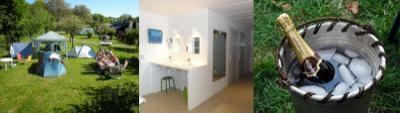

AC = Camping acceptant les camping-cars de :
VANDIÈRES
(N° 486)
Accès/adresse :
12 Rue de Bailly
Camping Rural
51700 VANDIÈRES
Camping Rural
51700 VANDIÈRES
Latitude : (Nord) 49.10647° Décimaux ou 49° 6′ 23′′
Longitude : (Est) 3.73395° Décimaux ou 3° 44′ 2′′
Tarif : 2012
Forfait emplacement, 2 personnes, électricité : 15 €
Enfant - 12 ans : 5 €
Services :


Lave-linge
Tables de pique-nique
Jeux
Autres informations :
Ouvert du 01/04 au 01/11
6 emplacements
Tel : + 33(0)326 580 269
http://www.champagne-nowack.com/hebergement.htm
champagne.nowack@wanadoo.fr

Le 12/06/2013 par Nowack Champagne
de
picou1
le 19/11/2008 :
Nous nous sommes arrêtés chez cet aviculteur. Accueil très chaleureux. Aire calme avec toutes commodités (douche, wc, électricité, vidanges...). Panorama superbe, idéal pour les balades. N'hésitez pas à faire une halte pour déguster leur champagne. Il est excellent et peu cher.
Nous nous sommes arrêtés chez cet aviculteur. Accueil très chaleureux. Aire calme avec toutes commodités (douche, wc, électricité, vidanges...). Panorama superbe, idéal pour les balades. N'hésitez pas à faire une halte pour déguster leur champagne. Il est excellent et peu cher.